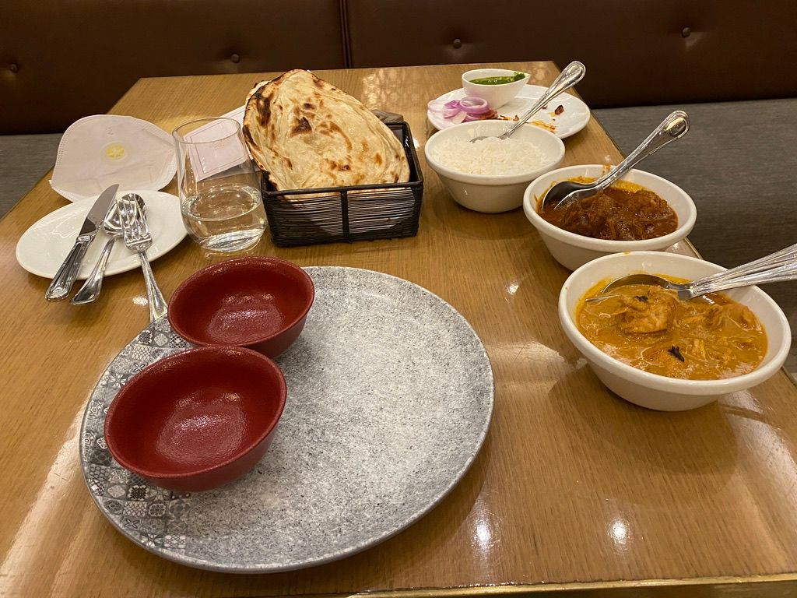
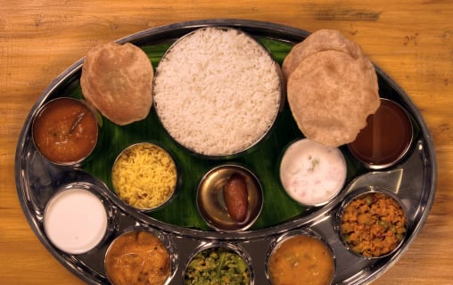
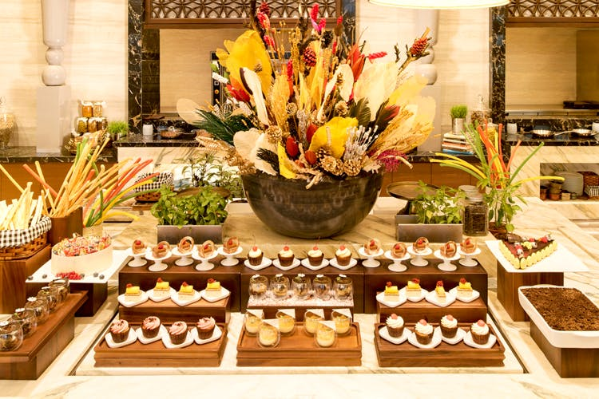

About Our Service

Favourite Dish

Berry Rhuburb Fool Cake
A "fool" is a British dessert that's usually made with custard. This is a modified, quicker version I created. My kids love it because it doesn't taste like rhubarb—so I guess it's well named! —Cheryl Miller, Fort Collins, Colorado.....